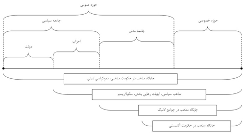

|
|

تغيير قوانين تبعيض آميز و مذهب
کاوه مظفري
چهار شنبه17 مرداد 1386
آيا تغيير قوانين تبعيض آميزِ جنسيتي، اساساً تغييري درون چارچوب مذهبي است؛ يا کاملاً برعکس، عليه اصول مذهبي مرسوم است؟ قرائت هاي نوگراي ديني، چه تاثيري در وضع قوانين عادلانه خواهند داشت؟ آيا تغيير يافتن قوانين تبعيض آميز، الزاماً از مسير مسلط شدن قرائت هاي نوانديشي ديني مي گذرد؟ دولت و احزاب چه نقشي در مشخص ساختنِ تفسير غالبِ مذهبي براي وضع قوانين دارند؟ چارچوبي ماوراي ديني براي وضع قوانين چگونه مي تواند باشد؟ آيا وضع قوانين بر اساس پايه هاي دنيوي، آزادي اديان را خدشه دار مي کند؟ ... مجموعه اي از اين قبيل سوالات، بويژه چگونگي رابطه سه جانبه ميان نهادهاي مذهبي، جامعه سياسي و جامعه مدني، مسئله اصلي يادداشت زير است. در راستاي پاسخگويي به اين سوالات، و فراهم آوردن مباني مفهومي لازم جهت برقراري گفت و گو در اين زمينه، ابتدا لازم است موقعيت هاي ممکن براي نمادها و نهادهاي مذهبي در جامعه مورد بررسي قرار گيرد؛ پس از آن، به چگونگي فرايند تغيير قوانين، بويژه در چارچوب برنامه «کمپين يک ميليون امضاء»، در رابطه با مذهب پرداخته شود.
مذهب و جامعه
اصطلاحاتي همچون؛ حکومت مذهبي، مذهبِ سياسي، حکومت آتئيستي، لائيسيته، سکولاريسم، دموکراسي ديني، الهيات رهايي بخش، ادبياتي مفهومي براي نامگذاري بر وضعيت هاي متفاوتي از رابطه ميان مذهب و نهادهاي مدني، سياسي و دولتي در جامعه هستند. براي ادامه بحث بر پايه مفاهيمي مشخص، تعاريفي مقدماتي از اين اصطلاحات در پائين آمده است:
حکومت مذهبي: حکمراني دولتي اقتدارگرا بر اساس قوانين مذهبي خاص. مانند جمهوري اسلامي ايران، پاکستان، و اکثر کشورهاي عربي.
مذهبِ سياسي: برنامه عملي برخاسته از اصول مذهبي خاص براي کسب قدرت سياسي يا استفاده از قدرت سياسي که عمدتاً حزب و بلوکي خاصي از قدرت را در برمي گيرد، و نه کلِ يک حاکميت را. از بنيادگرايي طالبان تا احزابِ اسلام گراي ترکيه را مي توان در اين رده جاي داد.
الهيات رهايي بخش: نوعي بهره گيري از اصول مذهبي براي کسب قدرت سياسي که عموماً مذهب را به ايدئولوژي هاي چپ آغشته مي سازد و ادعا دارد که پس از کسب قدرت دولتي، دموکراسي سکولار در جامعه برقرار مي شود.
دموکراسي ديني: نظريه اي براي تنظيم رابطه مذهب و حکومت که اگرچه حقوقِ قضائي در انطباق با اصول مذهبي است، اما در سطح ديوانسالاري مناسباتِ دموکراتيک برقرار است. اين اصطلاح عموماً در حد شعار توسط اصلاح طلبان حکومتي در ايران مطرح است.
سکولاريسم: در چنين جوامعي، مذهبِ عرفي شده مي تواند در جامعه مدني نقش فعال داشته باشد، اما مرز آن از سياست گذاري حکومتي کاملاً مجزا است. البته احزاب سياسي در اين نوع جوامع مي توانند سياستي مذهبي داشته باشند، اما تا جائيکه اساس دموکراسي را مخدوش نسازند. ايالات متحده نمونه اي از حکمراني به شيوه سکولاريسم ليبرالي به شمار مي آيد.
لائيسيته: موقعيتي کاملاً غير سياسي و غير دولتي براي مذهب، که مذهب تنها مي تواند بصورتي کاملاً محدود در جامعه مدني حضور داشته باشد. قوانين و نظام حقوقي در اين جوامع کاملاً غيرمذهبي و دنيوي است. قوانين کشورهايي همچون فرانسه و ترکيه اينگونه است.
حکومت آتئيستي: نظامي حکومتي که بر ضد همه انواع مذهب عمل کرده و تنها مذهب را در سطح کاملاً شخصي به رسميت مي شناسد. مثال بارز در اين مورد دولت هاي سابق بلوک شرق بويژه اتحاد جماهير شوروي هستند.
براي فهم بهتر اصطلاحات فوق، مي توان آنها را در طيفي که از قطب افراط گرايي مذهبي آغاز مي شود و به يک قطب ضديت با مذهب ختم مي شود دسته بندي نمود. اما اگر طبقه بندي و درک تفاوت هاي مفاهيم فوق تنها بر اساس ميزان توجه و اهميت «گفتمان ديني» بررسي شود، براي شناختِ واقعيت ها کافي نخواهد بود. لازم است که «جايگاه اجتماعي» مذهب در هر يک از مفاهيم فوق مورد توجه قرار گيرد. در واقع، به جاي ملاکِ «ديني – ضد ديني» در تحليل رابطه دين و جامعه، بايد فضاي بحثي کلان تر را جايگزين نمود. بدين منظور، ابتدا لازم است طبقه بندي از حوزه هاي مختلف اجتماعي ارائه شود؛ و پس از آن، جايگاه مذهب براي هر يک از اصطلاحات فوق در اين حوزه ها بررسي شود.
در يک طبقه بندي «نظري – روشي»، مي توان جامعه را به دو حوزه خصوصي و عمومي تقسيم نمود، در اين راستا حوزه عمومي تشکيل شده است از جامعه مدني و جامعه سياسي. جامعه مدني متشکل از نهادهايي همچون اصناف، رسانه ها، نهادهاي مذهبي، سازمان هاي غير دولتي و غير سياسي و اتحاديه هاي کارگري و تجاري مي شود. و جامعه سياسي تشکيل شده از احزاب مختلف سياسي و در نهايت دولت است. جايگاهِ اجتماعي مذهب در اين طبقه بندي تيپيک علاوه بر حوزه خصوصي تا درون جامعه مدني نيز تداوم يافته است، اما در همه جوامع، وضعيت بدينگونه نيست. در برخي موارد مذهب مي تواند در تمامي حوزه هاي اجتماعي حضور تعيين کننده داشته باشد، تا جايي که در راس دولت قرار گيرد؛ در مقابل، در مواردي ديگر ممکن است نهادهاي مذهبي به شدت مورد تحديد از سوي جامعه سياسي قرار گرفته و به اموري خصوصي سوق داده شوند. در نمودار زير جايگاه هاي متفاوتي از مذهب در جامعه به تصوير آمده است:

همانگونه که اشاره شد، جايگاه و موقعيت مذهب در حوزه هاي مختلف اجتماعي، تعيين کننده ميزان قدرت و نقش آن در تنظيم روابط اجتماعي است. علاوه بر اين مسئله، يگانگي و وجود تفسيري واحد از مذهب نيز در ميزان اين قدرتمندي تاثير دارد. به عبارت ديگر، هر اندازه تفسيري يک دست تر از اصول مقدس يک مذهب در جامعه غالب باشد، قدرت آن نيز بيشتر است. در مقابل، ممکن است مذهب در بسياري از حوزه هاي اجتماعي حضور داشته باشد، اما به دليل مسلط نشدن تفسير و گرايشي خاص از مذهب، باعث پخش شدن قدرت آن شود.
مهمترين مسئله اي که در ارتباط با ميزان قدرت سوگيري هاي مذهبي/ضدمذهبي در جامعه، مورد توجه قرار مي گيرد؛ ميزان دموکراتيک بودن ديگر حوزه ها اجتماعي است. به بيان ديگر، زماني ميزان قدرتِ گفتمانِ مذهبي/ضدمذهبي در جامعه چالش برانگيز مي شود، که با حقوق انساني، بويژه «حق آزادي» برخورد کند. زماني به دليل تسلط گفتمان ضد مذهبي در جامعه سياسي، بويژه دولت، به حق «آزادي اديان» خدشه وارد مي شود. در زماني ديگر، به دليل فتح قدرت دولتي توسط «نهاد مذهبي خاص»، گفتمان تک مذهبي، نه تنها آزادي هاي سياسي – مدني را تهديد مي کند، بلکه حقوق ساير اديان را نيز به مخاطره مي اندازد.
تنها، در شرايطي حقوق دوجانبه نهادهاي مذهبي و ديگر نهادهاي اجتماعي (مدني و سياسي) حفظ مي شود که تنظيم روابط اجتماعي بر اساس اصولي ماوراي گفتمان «مذهبي/ضدمذهبي» باشد. براي رسيدن به اين اصول گذشتن از مسيري دموکراتيک اجتناب ناپذير است. بدين منظور، براي حفظ حق آزادي نهادهاي مذهبي، و در سوي ديگر نهادهاي مدني – سياسي لازم است که از قبضه کامل جامعه سياسي (بويژه دولت) توسط هر يک از اين نهادها به تنهايي جلوگيري شود. به بيان ديگر، دولت به عنوان مرکزيت جامعه سياسي بايد نسبت به گفتمان هاي «مذهبي» و «ضدمذهبي» خنثي باشد. بعلاوه، در جامعه مدني نيز، استقلال همه نهادهاي مدني در کنار نهاد مذهبي بايد حفظ شود.
بر اساس آنچه که در بالا آمد، رسيدن به وضعيتي که در آن، حق آزادي چه براي اديان و چه براي ساير نهادهاي اجتماعي (مدني و سياسي) محفوظ بماند، تنها از رهگذر «فرايندي» دموکراتيک ميسر است. به عبارت ديگر، تنظيم روابط دموکراتيک اجتماعي صرفاً از طريق «برنامه» اي از بالا (و عموماً سياسي) امکان پذير نيست؛ بلکه، مجموعه اي از برنامه هاي مدني و سياسي لازم است تا فرايند گذار به جامعه اي که در آن به حق آزادي اديان و حق آزادي ديگر نهاد هاي اجتماعي (مدني و سياسي) توأمان احترام گذاشته مي شود، طي شود.
مذهب و کمپين
از آنجايي که در جامعه ايران، بلوک مسلط قدرت سياسي در حکومت، پيوندي ارگانيک با نهاد مذهبِ سنتي دارد، و گفتماني ايدئولوژيک با قرائتي حداکثري از شاخه اي از مذهبِ اسلام يعني شيعه اثني عشري را به عنوان مذهب رسمي کشور معرفي مي کند و در سياست ورزي به کار مي گيرد؛ لذا ساير جريانات اجتماعي (مدني – سياسي) ناگزيرند که در تدوين و اجراي برنامه هاي خود در حوزه عمومي، رابطه و موضع خود را نسبت به اين گفتمان، قانون ها و سياست هاي ناشي از آن تنظيم نمايند.
بدين ترتيب، کمپين يک ميليون امضاء براي تغيير قوانين تبعيض آميز جنسيتي نيز، به عنوان برنامه اي اجتماعي – مدني، ناگزير است، در جريان عمل، رابطه ي خود را با نهاد مسلط مذهبي (بويژه مذهبِ حکومتي) تنظيم نمايد. به بيان ديگر، اگرچه هدف اصلي کمپين «تغيير قوانين از پائين» است؛ اما از آنجايي که گفتمان غالبِ مذهبي – به دليل دولتي بودنِ مذهب – نقش به سزايي در تدوين قوانين دارد؛ لذا در مسيري که کمپين مي پيمايد، يکي از مهمترين پيامدهاي مترتب بر آن تاثيرگذاري بر گفتمان هاي موجود در ارتباط با مذهب است. در اين راستا، گرايش هاي متفاوت و مواضع متفاوتي در مواجهه با مذهب در درون کمپين وجود دارد.
پيش از پرداختن به گفتمان هاي دروني کمپين در خصوص چگونگي تنظيم رابطه با مذهب، ابتدا به مواضع دو دسته از منتقدان و مخالفان کمپين اشاره مي شود. در يکسو، مخالفت برخي جريانات سياسي (عمدتاً نيروهاي اصلاح طلب حکومتي) با کمپين يک ميليون امضاء، متاثر از گفتمان «مذهبِ سنتي/سياسي» است. در واقع، اين جريانات اگرچه به لحاظ شدتِ مذهبي بودن، نسبت به بلوک قدرتِ مسلط بر حکومت، معتدل تر هستند، اما همچنان در چارچوب گفتمان مذهبِ سنتي/سياسي قرار داشته، و از اين منظر نسبت به برنامة کمپين يک ميليون امضاء موضع گيري مي کنند. اگرچه برخي از آنها شعار «دموکراسي ديني» را طرح مي نمايند، اما در عمل از چارچوب «مذهب سياسي» فراتر نمي روند. در واقع، اين دسته از مخالفان، صرفاً تعدادي از مطالبات کمپين را قابل پيگيري مي دانند، و برخي ديگر از مطالبات را در تعارض با قرائتِ سنتي از اسلام مي دانند.
در سمت ديگر، منتقدانِ سياسي ديگري نيز هستند که اين بار از موضعي لائيک و در مواردي آتئيستي برنامه کمپين را رد مي کنند. اين منتقدان، که يا متصل به جريانات ليبرالِ لائيک هستند، يا جزء گرايش هاي افراطي چپ گرا؛ در مقابل کمپين با استدلال هايي برآمده از گفتماني «لائيک»، مسير کمپين را در مواجه با گفتمان مسلط مذهبِ سنتي/سياسي ناکارآمد مي دانند. به بيان ديگر، با وجود اختلافات سياسي – ايدئولوژيک ميان اين جريان ها، همگي آنها در موضع گيري «ضد مذهبي» هم نظر هستند، و برنامه کمپين يک ميليون امضاء را مورد نقد قرار مي دهند. در واقع، مي توان اذعان داشت که يکي از معيارهاي عمده مخالفان برنامه کمپين، بر اين اساس تعيين مي شود که کمپين را مطابق مذهب يا در مخالفت با آن تحليل مي کنند.
اما واقعيتِ مسيري که کمپين يک ميليون امضاء مي پيمايد، پيچيده تر از تفاسير تک قطبي فوق درباره رابطه کمپين با مذهب است. اگرچه، کنشگران کمپين بر اصلِ حداقلي «تغيير قوانين از پائين» توافق عملي دارند؛ اما از آنجاييکه کمپين، سازماني رسمي و ايدئولوژيک نيست، بلکه ماهيتي جنبشي داشته و دربرگيرنده کنشگراني با چارچوب هاي تفسيري متفاوتي است، لذا نمي توان موضع گيري سازمانيِ واحدي در خصوص مذهب را در فعاليت ها کمپين انتظار داشت. به بيان ديگر، تنظيم رابطه ميان برنامه کمپين و مذهب، «فرايندي» است که در جريان عمل شکل مي گيرد. در درون کمپين مي توان به حضور دو گفتمان نسبتاً مشخص در خصوص چگونگي تنظيمِ رابطه با مذهب اشاره نمود:
گفتمان نوانديشي ديني: تلاش دارد با ارائه تفاسير و قرائت هايي مترقي و پويا از اسلام، مطالبات کمپين را در چارچوب روح کلي اين مذهب اعلام نمايد. به عبارت ديگر، از نگاه اين گفتمان تلاش مي شود، مطالبات کمپين يک ميليون امضاء همسو با تفاسيري از اسلام اعلام شود، بدون آنکه از اصول حداقلي مندرج در برنامه کمپين کاسته شود. در امتداد مسيري که گفتمان نوانديشي ديني دنبال مي کند، برقراري ارتباط «چهره به چهره» و پيگيري خواستِ تغيير قوانين، منوط به استفاده از چارچوبِ استدلالِ مذهبي در تعامل با مردم است. در واقع، با وجود اينکه گفتمان نوانديشي ديني با رويکردي مترقي، اصل را بر تغيير قوانين قرار داده، و حاضر نيست از خواسته هاي کمپين بکاهد، اما همچنان در چارچوب گفتماني «مذهبي» تلاش مي کند، مشروعيت خود را اثبات نمايد. اين تمايل دوگانه در گفتمان نوانديشي ديني در مواردي منجر به چالش هايي پارادوکسيکال مي شود. به عبارت ديگر، هر اندازه که قرائت مسلط و حکومتي از مذهب، قدرتمند و مستدل است؛ در مقابل، گفتمان نوانديشي ديني بدون پشتوانه و نوپا است؛ در نتيجه، استفاده از گفتمان نوانديشي ديني در تعامل و ارتباط با مردم همواره با موفقيت همراه نيست. نکته ديگر، آن است که اين گفتمان نه از سوي طراحان و متوليانِ آن، بلکه از جانب کنشگراني استفاده مي شود که کاملاً مسلط به مباني فکري چنين گفتماني نيستند.
گفتمان سکولار: اين گفتمان در عمل از مواجهه با مذهب اجتناب مي کند و اساس مطالبات کمپين را به جاي آنکه با تفاسير مذهبي توجيه نمايد، از طريقِ تاکيد بر حقوق و نيازهاي انساني مطرح مي سازد. موضع گفتمان سکولار نسبت به مذهب، خنثي است. در واقع، نه در رد مذهب و نه در تائيد آن تلاش مي کند؛ بلکه، بدون سوگيري از کنار مسئله مذهب عبور مي کند. مسائلي که در اين گفتمان مورد تائيد قرار مي گيرد تا به خواست تغيير قوانين مشروعيت بخشد، مباني حقوق و نيازهاي انساني، و واقعيتِ تبعيض عليه زنان است. البته، اين گفتمان نيز به دليل آنکه، ادبياتِ مشترکي در گفتگو با مردم ندارد، به سختي پيش مي رود. مشکل اصلي اين گفتمان، بي پاسخ بودن و در نتيجه سکوت در مقابل مسئله مذهب است. در واقع، در چارچوب استدلالي گفتمان سکولار، تغيير قوانين ارتباطي با مذهب ندارد. از همين رو، کنشگراني که بر اساس اين گفتمان، خواست تغيير قوانين را پيگيري مي کنند و با افراد مذهبي به گفتگو مي پردازند، همواره نمي توانند صرفاً با تاکيد بر حقوق و نيازهاي انساني و اشاره به واقعيات زندگي روزمره به موفقيت دست يابند.

لازم به ذکر است که اين گفتمان ها الزاماً منتسب به کنشگر يا کنشگراني خاص نيستند، بلکه چارچوبي استدلالي را براي توضيح رابطه کمپين با مذهب مطرح مي سازند. در ميدان عمل بسياري از کنشگران ممکن است ترکيبي از گفتمان هاي سکولار و نوانديشي ديني را در ارتباط «چهره به چهره» به کار برند. به بيان ديگر، در سطح خُرد و در برخوردهاي فردي، عده اي از کنشگران، با رويکردي عملگرايانه از اين گفتمان ها استفاده مي کنند، تا جائيکه ممکن است برخي از استدلال ها منطبق بر عقايد شخصي آنها نباشد.
در سطح کلان، با کمي تساهل مي توان کنشگران درون کمپين يک ميليون امضاء را به دو دسته فمنيست هاي سکولار و فمنيست هاي مسلمان طبقه بندي نمود. اگرچه، در اين طبقه بندي دوگانه بسياري از همپوشاني ها و تنوعات پنهان مي ماند، اما نهايتاً ملاک خوبي براي تحليل رفتار کنشگران به دست مي دهد. البته، بايد اشاره نمود که چالش ميان فمنيست هاي سکولار و فمنيست هاي مسلمان، چالشي نيست که الزاماً بايد به نفع يک دسته پايان يابد؛ بلکه، بيشتر تعامل و تضارب آرائي است که به پويايي دروني کمپين مي انجامد. به بيان ديگر، همراهي و همبستگي جريانات مختلف، بر پاية هدفِ مشترکِ «تغيير قوانين از پائين»، خصلت اساسي کمپين يک ميليون امضاء است.
چشم انداز آينده
اگرچه، بلوک مسلط قدرت سياسي بواسطه استفاده از دستگاه دولت، و دولت از طريقِ استفاده ابزاري از مذهبِ ايدئولوژيک، تلاش مي کند قدرت بيشتري را در جامعه بدست آورد و فضاهاي بيشتري را به خود اختصاص دهد؛ اما بايد توجه داشت که جنبش هاي اجتماعي، بويژه در دهه اخير، مصرانه تلاش مي کنند که از ميزان دسترسي و کنترل دولت و جامعه سياسي بر جامعه مدني بکاهند. در واقع، بايد توجه داشت که منازعاتي جدي ميان جنبش هاي اجتماعي و «قدرت سياسي تماميت خواه» در ميان است، و در برابر ايدئولوژي اي که بر جامعه تحميل مي شود، «شناخت هايي رهايي بخش» نيز از درون جامعه در حال سر برآوردن هستند.
جنبش زنان ايران، طي اين مدت توانسته است تعاريف و معاني جديد و برابري خواهانه اي در سطح جامعه، خصوصاً جامعه مدني رواج دهد. در واقع، اگر ايدئولوژي غالب، با هاله اي از مذهب سعي دارد، تمامي حوزه هاي اجتماعي را مورد استعمار خويش قرار داده و مردانه سازد؛ در مقابل، جنبش زنان ايران توانسته است گفتمانِ «فمينيستي» را به عنوان بديلي پُرظرفيت براي کنش اجتماعي ارائه نمايد، و به هاله زدايي از ايدئولوژي حاکم بپردازد. به عبارت ديگر، جنبش زنان ايران به جاي آنکه در چارچوب ايدئولوژي حاکم، به امتيازاتِ سيستمي براي زنان بسنده کند؛ توانسته است گفتماني ماوراء ايدولوژيک را براي مشروعيت بخشيدن به خواست هاي فراسيستمي خود تدوين و ترويج نمايد.
در اين راستا، کمپين يک ميليون امضاء، الگويي موفق و در عين حال پويا از چنين جنبشي است. کمپين توانسته است با فرا رفتن از دستگاه ايدئولوژيک حاکم، ضرورت تغيير در قوانين را با گفتمان «برابري جنسيتي» و از پائين ترويج دهد. بايد اذعان داشت که کمپين يک ميليون امضاء بر اساس گفتماني ماوراء مذهبِ ايدئولوژيک و حکومتي حرکت مي کند؛ و در برابر مسائل و مشکلات پيش رو، بر اساس چارچوب هاي تفسيري ديگري دست به عمل مي زند. مسئلة رابطه کنشگران کمپين و نهادها و نمادهاي مذهب، نيز بر مبناي همين چارچوب هاي تفسيري تنظيم مي شود.
همانگونه که پيشتر اشاره شد، اگرچه گفتمانِ واحدي در مواجهه و موضع گيري در قبال مسئله مذهب در درون کمپين وجود ندارد؛ با اين وجود، مبناي پايه اي اين گفتمان ها، انديشه برابري جنسيتي است. در نتيجه، در کوتاه مدت ممکن است مجادلاتي در سطح خُرد وجود داشته باشد، اما اين مجادلات و پويايي ها زمينه ساز خلق چارچوب هاي تفسيري تازه تري خواهند بود. به بيان ديگر، در بلند مدت بايد انتظار داشت که به دليل تمرکز همه کنشگران (با هر گرايشي) بر مسئله برابري جنسيتي؛ کمپين يک ميليون امضاء، نهايتاً از طريق چارچوبي ماوراء ايدئولوژيک و از مسيري اجتماعي (از پائين)، به تحقق هدفِ خود، يعني تغيير قوانين نائل آيد. و بدين ترتيب، مي توان ادعا کرد که چنين رويکرد بلندمدتي، و پيامدهاي آن در سطح کلان، در راستاي فرايند عرفي شدنِ جامعه ايران خواهد بود.
منابع
تقوايي، احمد. (1386) «جايگاه ازادي اديان در سکولاريسم و لايسيته»، اينترنت.
درويش پور، مهرداد. (1386) «فمينيسم سکولار: پيشقراول مدرنيته در ايران!»، متن سخنراني در هفدهمين کنفرانس بين المللي بنياد پژوهش هاي زنان ايران، مونترال.
شجاعي زند، عليرضا. (1385) «مسيرهاي محتمل در عرفي شدنِ ايران»، مجله جامعه شناسي ايران (دوره هفتم، شماره 1، صص30-65).